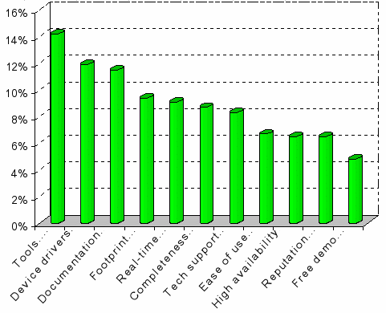
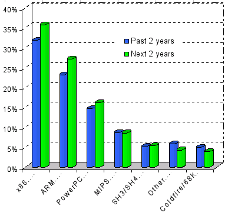

|
|
| Snapshot of the Embedded Linux market - May, 2003 |
Rick Lehrbaum (May 28, 2003)
The results of LinuxDevices.com's annual Embedded Linux Market Survey are now in, and they provide an interesting profile of the ascendant embedded Linux software market. This year's online survey was conducted over a three month period -- from November 2002 through January 2003 -- and had nearly 600 participants, the bulk of whom categorize themselves as embedded system software, hardware, or system developers.
Below, we focus on several findings of the survey which we found particularly interesting, and offer our own interpretation of certain points of data. The full set of results is available here, and we encourage you to review the complete data and draw your own conclusions. Additionally, we have provided a discussion thread in our Forum where you can post comments or questions about the survey, regarding our interpretation, or on anything else related to this topic.
It should be noted that the respondents to our survey are self-selected, and that we have minimal control over multiple or dishonest voting -- although we do block multiple votes from the same IP. Additionally, the operating system preference data on which our survey is based represent instances of previous or anticipated use of Linux in embedded projects, and are no measure whatsoever of revenue market share. The latter, which is the more appropriate measure of the relative commercial success of operating system software and tools vendors, we leave in the capable hands of VDC, EDC, IDC, and other three-letter market analysts.
And now, for our observations . . .
Observation 1: "Home grown" is king of the hill
Interestingly, the most popular source of embedded Linux for future projects is: "home grown (I build my own from GNU/Linux downloaded sources)." That is, developers apparently prefer freely downloadable noncommercial sources -- such as kernel.org, Debian, or the uClinux project -- over commercial embedded Linux distributions. If we make the assumption that "Red Hat" also fits into that group -- since it represents a well known, highly respected, and freely downloadable starting point for building a home grown embedded Linux implementation -- then the percentage of future Linux projects attributable to essentially noncommercial sources is greater than 50%. Indeed, we have considerable anecdotal evidence, from our many Device Profile articles, that such uses of Red Hat Linux in embedded projects are quite common.

Figure 1: Preferred Linux source/vendor
To those familiar with the embedded software market, this result will come as no surprise, for in survey after survey over the last 25+ years the #1 embedded software platform has consistently been "none of the above," with home-grown kernels and OSes being used in 50-75% of embedded systems and devices. The interesting news is that there now appears to be a strong a trend away from proprietary roll-you-own, toward "build my own from GNU/Linux downloaded sources" -- which gives developers great flexibility, freedom from sole-sourced proprietary software, full access to source code, reduced royalty costs, the benefit of standards (Linux/POSIX compatibility, etc.), and the ability to take advantage of a rich set of features and functions that are freely available for both noncommercial and commercial use.
The following chart from a mid-2001 EDC survey dramatically illustrates the trend away from "home grown" and toward embedded Linux. Note the meteoric fall of "home grown" from first to last place, and the assumption of the first place position by embedded Linux . . .
)window.location='http://www.linuxdevices.com/files/misc/edc-os-trends2.jpg')
Observation 2: "tools rule"
In light of "Observation 1," it is not unexpected that the factor having the greatest influence on developers' choices of a vendor or source for embedded Linux software is "development tools" -- closely followed by "availability of device drivers", and then "documentation".

Figure 2: Key factors influencing choice
Significantly, technical Linux characteristics such as real-time performance and high availability appear to be perceived as secondary issues, which is consistent with the previously noted preference for starting from the "standard Linux" code base rather than obtaining code modified by embedded software vendors. Developers apparently do not consider there to be a significant difference between the various sources for embedded Linux software (other than being able to get the device drivers they need), but are more concerned with having the tools they need to build their own embedded Linux implementation that matches their application's requirements.
Observation 3: x86 is still out front, but ARM is close behind
In the raw survey results, we found "ARM" to be overtaking "x86" during the next two years. However, based on the fact that Transmeta categorizes their Crusoe CPU as an x86 architecture processor, we decided to lump the "x86" and "Crusoe" numbers together to come up with the following graph.

Figure 3: Trends in embedded CPU choice
What we see here, is x86 in first place and ARM in second -- both growing, but with x86 maintaining a 9% lead over ARM. Incidentally, "ARM" includes Intel's highly popular StrongARM and XScale processors.
Observation 4: What developers are -- and are not -- willing to spend money on
We asked two slightly different questions of developers regarding their willingness to spend money on their embedded Linux operating system software: - "Would you consider paying for Linux development/support services?"
- "Would you consider paying per-unit royalties?"
The results are as follows . . .
Figure 4-a (above):
Would you consider paying for Linux development/support services?
Figure 4-b (above):
Would you consider paying per-unit royalties?
Clearly, the responses to these two questions were quite opposite: only 16% indicated they would not consider paying for services, while just 14% said they would consider paying royalties.
Talk back!
Do you have a comment or question on this story? talkback here
Related stories:
 |
|
|
|
|
|
|
|
 Use of this site is governed by our
Terms of Use
and Privacy Policy.
Except where otherwise specified, the contents of this site are copyright © 1999-2005
Ziff Davis Publishing Holdings Inc.
All Rights Reserved. Reproduction in whole or in part without permission is prohibited. Linux is a registered trademark of Linus Torvalds. All other marks are the property of their respective owners.
Use of this site is governed by our
Terms of Use
and Privacy Policy.
Except where otherwise specified, the contents of this site are copyright © 1999-2005
Ziff Davis Publishing Holdings Inc.
All Rights Reserved. Reproduction in whole or in part without permission is prohibited. Linux is a registered trademark of Linus Torvalds. All other marks are the property of their respective owners.


 news feed
news feed